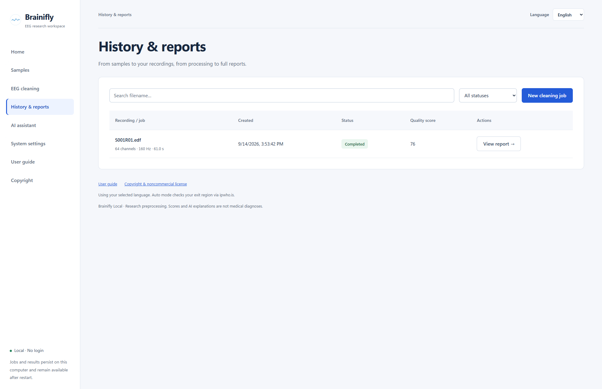

Screenshots show a real isolated workspace using public PhysioNet samples. They contain no private recordings, real API keys or generated AI conclusions. Settings show an unsaved DeepSeek preset; no AI request was sent. The English-interface report screenshot retains the Chinese report language selected when the sample job was submitted.
History and local storage
Closing the page or restarting the service does not delete saved jobs and reports.
- Open History & reports. Search by filename or filter by status such as Completed, Failed or Running.
- Choose View report for finished jobs or View job for progress and errors.
- Force-interrupted jobs do not resume computation automatically. Review the failure after restarting and submit again.
- Jobs, uploaded inputs, outputs, AI settings and conversations live in .local-data. Stop the service before backing up the entire directory.
- Backups may contain API keys and sensitive recordings. Never upload them to a public repository. There is no automatic cleanup or bulk-delete button; back up before manual maintenance.
